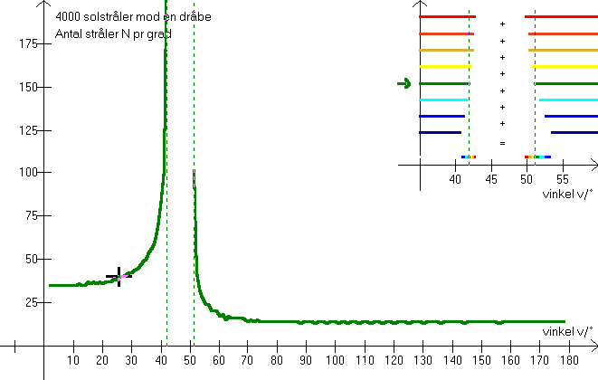
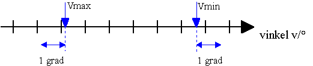
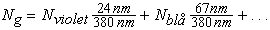

Ved at kikke på dette billede, kan vi se regnbuens farvesammensætning. De 40000 stråler rammer dråben fra nederste kant til øverste kant, og programmet beregner antallet, N, af stråler indenfor hver grad (fra 0° til 180°). Kun røde farver spredes i vinkelområderne: 42,4° - 42,7° og 49,8° - 50,4°. (sammenlign med øvelse 3). Rød er derfor en »ren« farve. (anførselstegn fordi rød ikke er en farve, men et bølgelængdeinterval.) Hvorledes lyset opfattes af øjet i de forskellige intervaller afhænger af hvor mange farver der ses på én gang og hvor meget lys der er af de forskellige farver. I en databog kan man f.eks. finde følgende tabel over »Det synlige lys:«
Det synlige lys:
violet 400 - 424 nm
blåt 424 - 491 nm
grønt 491 - 575 nm
gult 575 - 585 nm
orange 585 - 647 nm
rødt 647 - 780 nm.
F6 giver lyset for den enkelte farve, når der er korrigeret for det lys, som spredes ud af dråben inden det når ned til os. F5 giver en korrigeret sum af alle farver, dog er alle værdier ganget med 10, for nærmere forklaring se »polarisation«
Da regnbuerne kun er 2°-3° brede, er det tæt på Alexanders mørke bånd for unøjagtigt kun at beregne antal stråler pr grad og ikke f.eks. pr halve grad, men husk, at sollyset kommer fra en skive på 0,53°. Bemærk også, at interferens og polarisation har indflydelse på det spredte lys i dråben. I programmet beregnes antal stråler pr grad, således at intervallerne placeres op til Alexanders mørke bånd. Det gør, at maksima for de enkelte farver beregnes korrekt (men markøren kan ses lidt forskudt). Se også opgave 10.

Hvilken farve har det spredte lys uden for selve regnbuerne?
I hvilket vinkelområde spredes strålerne fra den øverste halvdel af dråben? (gå eventuelt tilbage til »Alexanders bånd«.)
Og i hvilket vinkelområde fra den nederste halvdel af dråben?
Antag, at lyset spredes ligeligt indenfor disse vinkler, og beregn antallet af stråler pr grad.
Udregn det vægtede gennemsnit af de spredte farver vha. formlen

,hvor N'erne aflæses på skærmen f.eks. ved vinklen v = 40°, og tællerne er beregnet ud fra tabellen »Det synlige lys«.